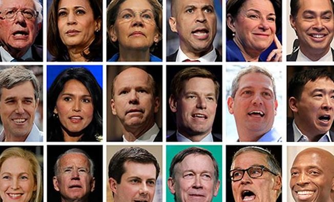

Who Will Be in the Next Democratic Cabinet?
Gov.Steve Bullock (D-MT) announced his run for the presidency on Tuesday.He did so without the endorsement of Montana’s Democratic Senator, Jon Tester, and while struggling to name an accomplishment he was most proud of in his six years as governor.Democrats had hoped he would run against Montana’s other Senator, Steve Daines (R-MT), and are reportedly still pleading with him to change his mind.
Gov.Bullock is now the 22nd candidate to announce a run for the Democratic pennant, with more possibly on the way.Not all of them can be the nominee, and with several potential candidates currently polling at 0%, it’s questionable how many of them really want to be.There is remarkably little downside to running for president: one is just as likely to be promoted politically as to stay where they are currently.Many in fact most are probably hoping to join the next Democrat administration.Here’s what they may be angling for:
We’ll start with the assumption that former Vice President Joe Biden wins the nomination, either outright or at the Convention.It’s still ridiculously early days, but his lead thus far in the polls is consistent and considerable.He’ll have at least one obvious choice for running mate.
Sen.Kamala Harris (D-CA): If the freshman Senator from California is not the nominee, she could be a valuable running mate.As a woman of color, she provides demographic balance to Joe Biden on a presidential ticket.If somehow she doesn’t overachieve in the primaries, or is passed up for VP, she is also a strong choice for Attorney General.
Mayor Pete Buttigieg (D-IN): It would be a shame for Mayor Pete’s talents and resume to go to waste, yet his age (37) and perceived lack of experience may restrain his ambitions.It’s also unclear in the current political environment that he could get elected to a higher office in Red Indiana.Were he to be chosen as Biden’s running mate, the young Hoosier would immediately draw comparisons to Dan Quayle.If he’s still too young to serve as, say, Secretary of State, his knowledge of eight languages might serve him well as United Nations Ambassador.
Sen.Michael Bennet (D-CO): Sen.Bennet was reportedly on the short list for Secretary of Education, under President Obama, before being passed up for Arne Duncan.He may be luckier this time, or, as his seat doesn’t come up again until 2022, may opt to stay where he is.
Gov.Steve Bullock (D-MT): The newest entry into the race might not be in it for very long.In fact, his campaign strategy probably depends, quite bluntly, on Biden screwing up.There’s still time for him to change his mind, as fellow Democrats are no doubt reminding him, and challenge Sen.Daines next year.Though, western red state governors are often popular choices for Secretary of the Interior.
Rep.John Delaney (D-MD): The former three-term congressman, and first Democrat to announce his presidential aspirations, is admittedly a long shot for any kind of position, beyond perhaps an ambassadorship.Still, Delaney enjoyed a lengthy business career, and served on the House Financial Services and Joint Economic Committees, so he might angle for Secretary of Treasury or Commerce.
Gov.John Hickenlooper (D-CO): If you know anything about the former two-term governor of Colorado, it’s probably his moderate-to-conservative stances on energy and healthcare.This would probably make him a controversial choice, no matter who controls the Senate, for Secretary of Energy or Health Human Services.Democrats are also rather steamed he didn’t elect instead to run against Cory Gardner next year.
Rep.Seth Moulton (D-MA): You probably have to either know a lot about politics, or live in Massachusetts, to know much about Seth Moulton.His prior seven years service in the Marines, and four tours of duty in Iraq, might suggest a post as Secretary of Defense or Veterans Affairs.
Rep.Tim Ryan (D-OH): Another candidate who was either banking on Biden not running, or hoping he falters, the Ohio moderate first entered the national scene by challenging Nancy Pelosi’s House Democratic leadership.Given his emphasis on needing to win back the white working class, it might almost be a cliche to suggest Ryan for Secretary of Labor.His service on the Appropriations Committee might also point to the Office of Management and Budget.
Sen.Cory Booker (D-NJ): Further down the list, Biden’s VP options get fringy.He could go with Booker, finishing up his first full term in the Senate.It’s also possible the former Newark mayor could be useful in a more behind-the-scenes role, such as White House Chief of Staff.New Jersey’s filing deadline is late enough so that, if like Sen.Rubio, his campaign doesn’t go anywhere, he can always run again for another term.
Sec.Julian Castro (D-TX): Castro is one of the few candidates running who has actually served in cabinet before.It wouldn’t make sense to send him back to Housing and Urban Development, so he might also be a dark horse candidate for VP.He also specialized in trade issues while Mayor of San Antonio, so he could be a decent pick for U.S. Trade Representative.
Gov.Jay Inslee (D-WA): The two-term governor of Washington is, by his own admission, running a single-issue campaign, on combatting climate change.This probably doesn’t explain why he’s currently campaigning at 0%, however.Inslee would be as good a choice as any to run the Environmental Protection Agency, or, perhaps, Secretary of Energy.
Rep.Eric Swalwell (D-CA): Another three-term congressman, who gave up a safe seat, and now suddenly has to go somewhere in January.Rep.Swalwell’s long shot bid for the presidency might portend an even longer-shot audition for a cabinet post or patronage position, usch as CIA Director or Director of National Intelligence.
Sen.Kirsten Gillibrand (D-NY): By contrast to Sen.Harris, Sen.Gillibrand probably reminds too many people of the last Democrat to run against Barack Obama.Since her first election to the House, in 2006, Gillibrand has served on two committees consistently: Agriculture and Armed Services.She would be an interesting, if not curious choice, for either Secretary of Agriculture, Defense, or Veterans Affairs.She also hasn’t practiced law in almost 15 years, so AG might not be in the cards either.She was just re-elected to her second full term in the Senate, however, so she may try again in 2024.
Sen.Amy Klobuchar (D-MN): You can be anything you want if you’re from Minnesota, the saying goes, except President of the United States.It’s unlikely Sen.Klobuchar would join her predecessors in the Senate, Hubert Humphrey and Walter Mondale, as VP.She does have a prosecutorial background, like Harris, so becoming Attorney General would make some sense.Like Gillibrand, she was just re-elected, to a third term, and could try again when her seat comes up.
Sen.Bernie Sanders (I-VT): The non-Democrat represents an outsider wing of the Party and may not be given any role in an administration that he doesn’t lead.Perhaps Secretary of Health Human Services to push Medicare for All.More likely, his second run, if not successful, could lead to platform concessions to push the actual nominee to the left.Interestingly, Sen.Sanders filed for re-election, to a fourth term in the Senate, immediately after winning his third last year.
Sen.Elizabeth Warren (D-MA): Would a cabinet post actually seem like a demotion for Sen.Warren?She has already served as Special Advisor for the Consumer Financial Protection Bureau before her election to the Senate.It’s possible that, if offered, Warren could use her experience and expertise in a similar position, such as Secretary of Treasury or Commerce.She already occupies a very famous Senate seat, of course, and could instead build a legacy as the Lioness of the Senate.
Rep.Tulsi Gabbard (D-HI): Rep.Gabbard seems to have more support outside her party than in it.That doesn’t seem to bode well for her presidential aspirations within the Democratic Party.As a dovish veteran she a long shot for Secretary of Defense but could end up as Secretary of Veterans Affairs.
Sen.Mike Gravel (D-AK): The former Alaska Senator, and frequent presidential candidate, has made no illusions as to the seriousness of his candidacy.Yet, he still filed, so technically, he’s included here.'The goal will not be to win, but to bring a critique of American imperialism to the Democratic debate stage.'A cabinet position is unlikely.
Mayor Wayne Messam (D-FL): The mayor of Miramar, Florida, and former Florida State Seminoles wide receiver, has a bright future in politics, and is probably running to get his name out for higher office.Look for him as a potential congressional candidate, or challenger to Gov.Ron DeSantis or Sen.Marco Rubio in 2022.A cabinet position is unlikely.
Rep.Beto O’Rourke (D-TX): The former congressman probably best known for barely losing to Sen.Ted Cruz last year, Beto O’Rourke has made a career out of failing up.With his movie star good looks and Kennedyesque charisma, who knows what the future holds?Maybe MSNBC?A cabinet position is unlikely.
Marianne Williamson and Andrew Yang: It’s unclear, frankly, why either of these people are running, other than to get their names and issues out there.For Yang, it’s his 'Freedom Dividend,' a form of universal basic income.For the author, lecturer, and activist, probably some form of name ID, possibly to be parlayed into a TV gig.Cabinet positions are unlikely.
[bsa_pro_ad_space id=4]
Share on Facebook Tweet Follow us
Posted On: 2019-05-15T00:00:00
Posted By: Robert Martin (CN Staff)



Content Date: 2019-05-15
Download Date: 2021-07-08
Document ID: L0C04DNG2